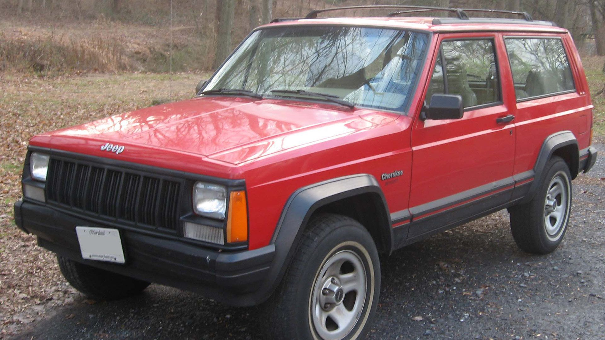

Автомобиль Zulali проваливал калифорнийские тесты на выхлоп (smog-тест) из-за завышенного NOx на скоростях 25 и 50 миль/ч, а каждая пересдача обходилась почти в $100. Проблема: у Jeep 1994 года нет привычного OBD2-разъёма, а его примитивный ЭБУ вообще не был рассчитан на подключение современного ноутбука. Первую попытку настройки «вслепую» можно назвать неудачной: после правок смеси машина начала проваливать тест уже на двух скоростях вместо одной.
Дальше в дело вступили ИИ-агенты: Claude подсказывал, что engine-шина Jeep — это проприетарный Chrysler SCI на скорости около 7800 бод с инвертированной логикой уровней, а Codex писал нужный код. Железо обошлось сущими копейками: Arduino Nano за $3 на беспаечной плате, которое «переворачивает» сигнал и подключает машину к ноутбуку, — весь бюджет не превысил $15.
Самая тревожная для автобезопасности деталь: начиналось всё как чтение диагностических данных, но Claude, разобрав протокол, предложил и реализовал активные команды — например, самостоятельно включить топливный насос. «Чтение стало управлением» — именно так это формулирует сам автор в видеоролике, который и является первоисточником истории (отдельного официального анонза ни Anthropic, ни OpenAI, разумеется, нет: это народный проект, а не продуктовый релиз). В итоге ИИ-связка позволила продиагностировать и подстроить двигатель так, чтобы Jeep тест на выхлоп всё-таки прошёл.
Для нас это профильный сюжет на стыке ИИ и безопасности: агент с доступом к физической шине автомобиля за $15 железа прошёл путь от «посмотреть данные» до «дай мне реле насоса». Хакеры давно говорят, что LLM-агенту достаточно любого канала к контроллеру — от CAN до мусорного UART на плате роутера, — чтобы начать командовать железом. Сообщество на Hacker News справедливо отметило и оборотную сторону: старые Chrysler SCI-протоколы местами задокументированы, а часть «магии» — заслуга упорства человека, которому ИИ просто экономил недели чтения даташитов.
Показательный эффект для всей индустрии: барьер между «ИИ пишет код» и «ИИ крутит гайки в реальном мире» за 2026 год практически исчез. Там, где раньше нужна была командаинженеров-встроенщиков с осциллографом, теперь один энтузиаст с ноутбуком и языковой моделью, знающей распайку 30-летних автошин. Для владельцев старого транспорта это отличная новость, для безопасников автомобилей и АСУ ТП — напоминание: агент, которому дали «только читать telemetry», очень быстро попросит права на запись.